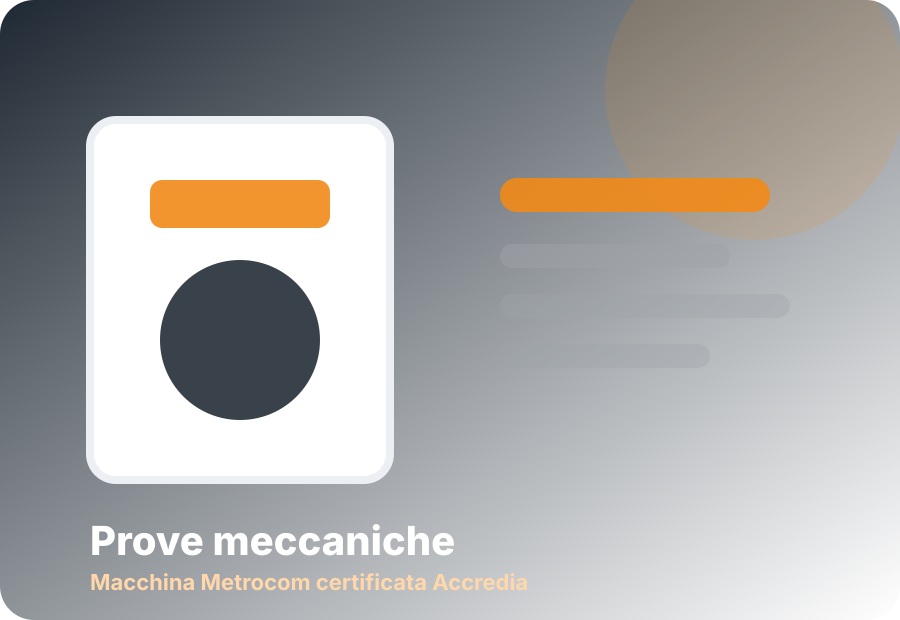
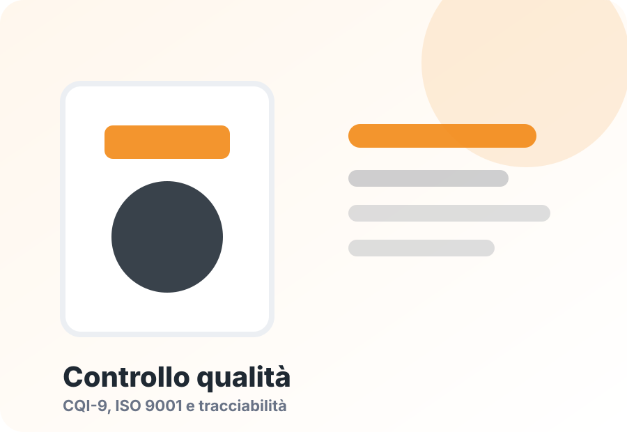

Prove di durezza
Test non distruttivi eseguiti sul materiale trattato per verificare l'avvenuto trattamento termico.
Controllo qualità
TEMPRALL presidia ogni fase del ciclo di trattamento con controlli, documentazione e prove dedicate, in linea con i requisiti ISO 9001 e CQI-9.
Certificazioni
Reperibilità, controllo, omogeneità e documentazione personalizzata dell’intero ciclo di trattamento sono alla base della linea di servizi TEMPRALL, in accordo con la certificazione RINA secondo UNI EN ISO 9001.
Il controllo dei cicli termici è affidato a sistemi di monitoraggio elettronici e a un software di supervisione che rileva, registra e archivia i cicli effettuati, garantendo tracciabilità e monitoraggio continuo.
Documentazione
Su richiesta, TEMPRALL può fornire documentazione tecnica per seguire in modo chiaro le fasi di trattamento e controllo.
Diagramma di trattamento termico
Rapporto di esecuzione trattamento termico con parametri immessi
Certificato di durezza
Controlli sul prodotto
Test non distruttivi eseguiti sul materiale trattato per verificare l'avvenuto trattamento termico.
Test eseguito su provini ricavati dal cliente tramite macchinario accreditato, per verificare le caratteristiche meccaniche ottenute.
Controlli successivi alla solubilizzazione per individuare deformazioni e supportare le operazioni di raddrizzatura.
Verifiche eseguite al termine delle lavorazioni per individuare eventuali difetti sul particolare.
Controlli sul processo
Tutti gli impianti di trattamento termico sono dotati di software supervisore per la registrazione dei dati raccolti dai sensori.
Test di uniformità della temperatura registrata all'interno della camera del forno.
Test di accuratezza del sistema di misura del forno.
Prove e controlli
Eseguiamo prove di durezza mediante durometro, utilizzando sfere da 2,5 o 62,5 di carico. I macchinari utilizzati sono quattro, tutti certificati annualmente dall’azienda Affri.
La macchina per prove meccaniche Metrocom, acquistata nel 2012, è completamente digitalizzata e certificata Accredia.


Clienti e forniture
TEMPRALL è fornitore ufficiale per trattamenti termici e, in alcuni casi, anche per raddrizzatura di telai automotive.
Politica qualità
La direzione TEMPRALL persegue una politica che pone al centro delle proprie attività il cliente, la conformità ai requisiti UNI EN ISO 9001:2015 e il miglioramento continuo del sistema di gestione per la qualità.
Gli obiettivi principali riguardano il miglioramento dell’immagine e della reputazione sul mercato, la soddisfazione delle parti interessate, il rispetto degli impegni contrattuali, la cura della comunicazione verso il cliente, il miglioramento della qualità del prodotto e il rispetto della normativa sulla sicurezza nei luoghi di lavoro.
Richiedi informazioni